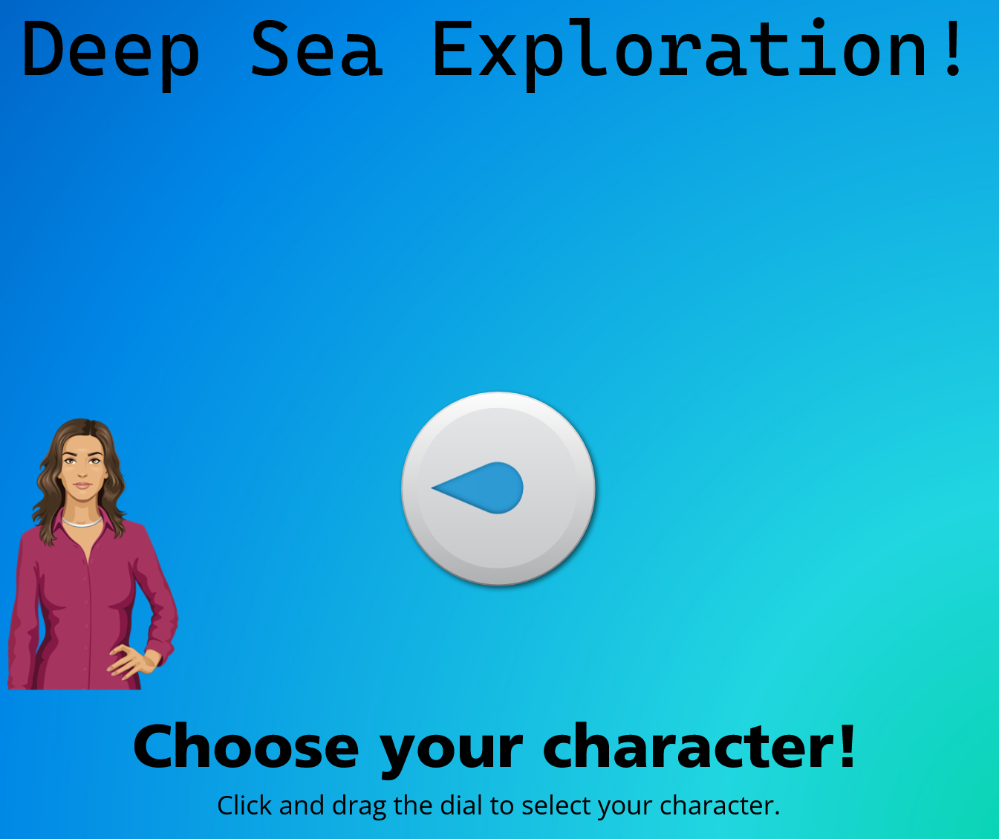
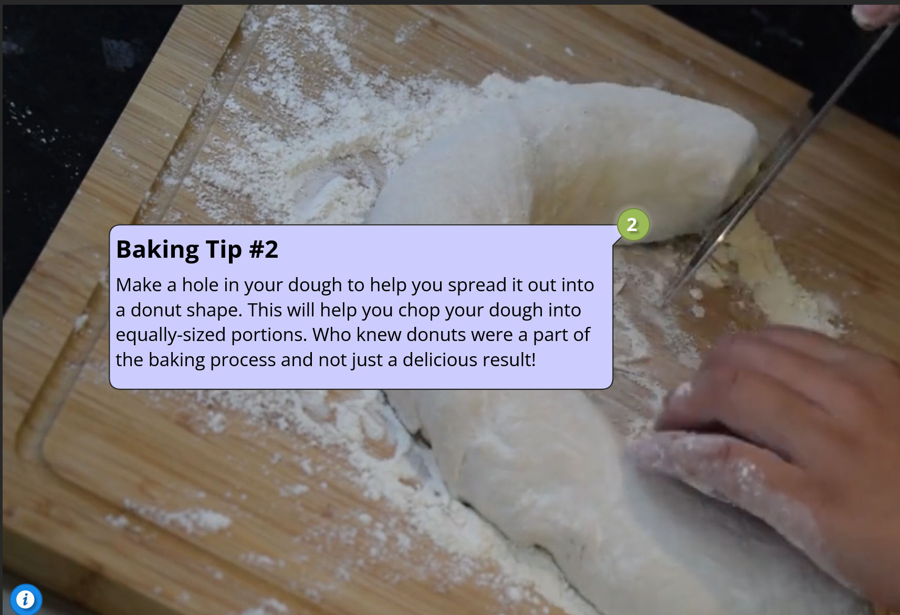
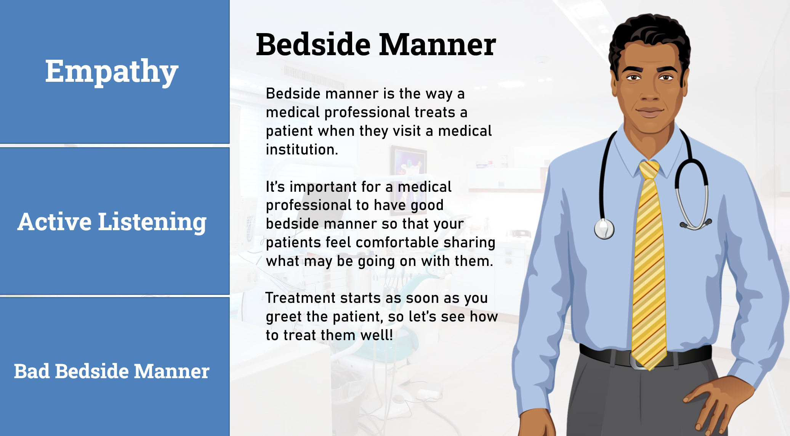
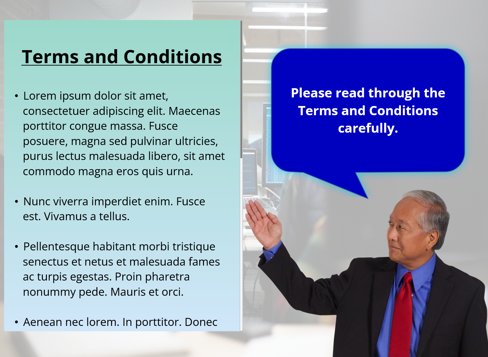
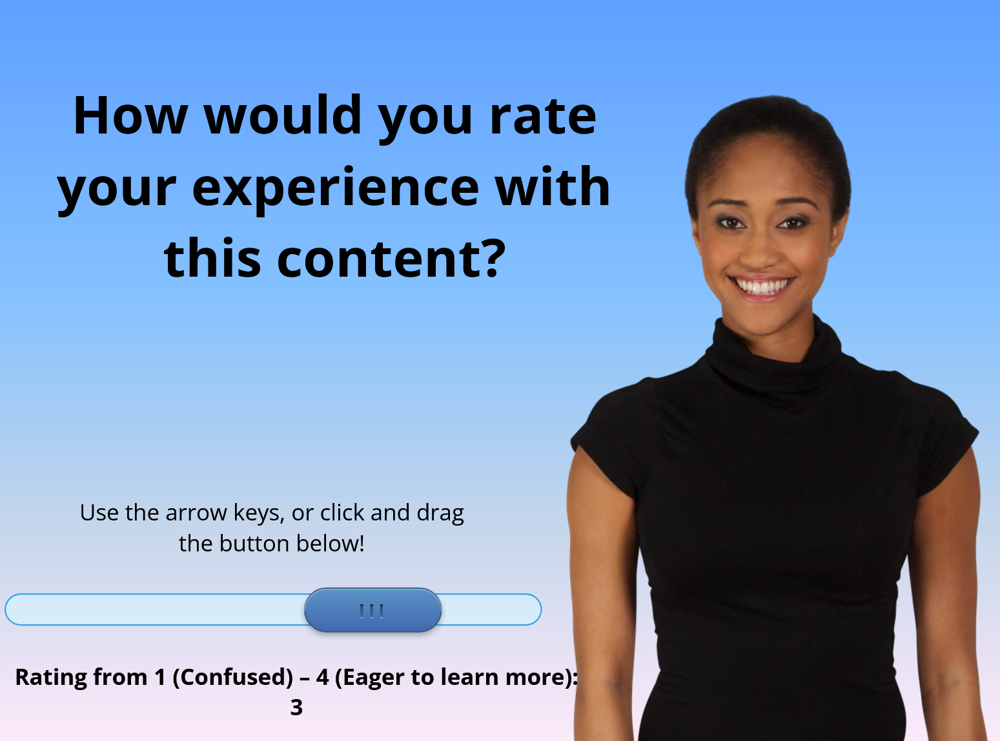
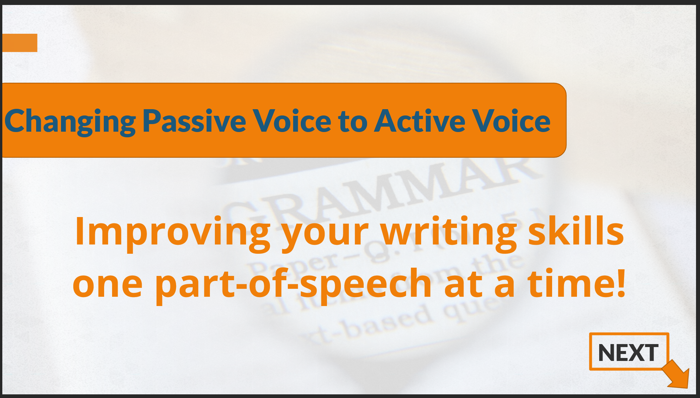
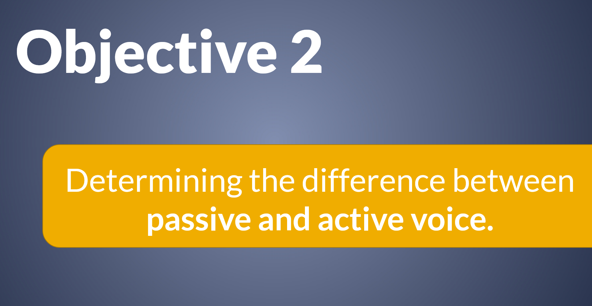
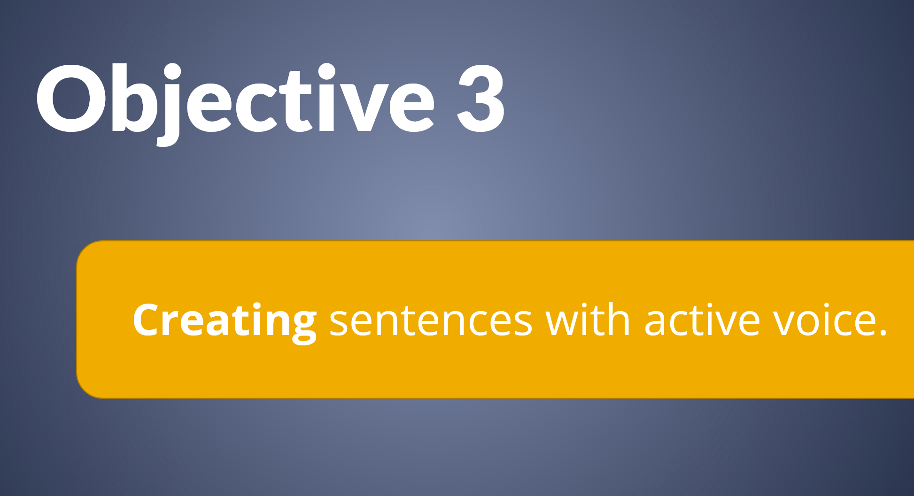
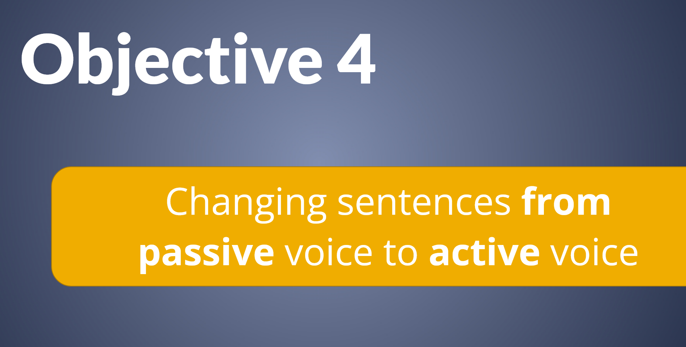

Projects
-

Choose Your Character
Objective: Engage learners in potentially info-dense material with personalized characters to guide them through the course.
Target Audience: Orientation for diving company employees or attendees of deep sea exploration event.
Program Used: Articulate Storyline 360 -

Interactive Video
Objective: Create engaging, interactive video content for an explainer video about baking.
Target Audience: Bakers, HR departments
Program Used: Articulate Storyline 360 -

Bedside Manner Tab Explanation
Objective: Display multi-page information about medical bedside manner using tabs, triggers, and states
Target Audience: Orientation for new medical professionals.
Program Used: Articulate Storyline 360 -

Amazon Webpage Hotspots Explanation
Objective: Identify and explain features of a typical Amazon webpage.
Target Audience: Users new to online shopfront webpages.
Program Used: Articulate Storyline 360 -

Branching Scenario
Objective: On-board new employees who will handle confidential information. Here's the storyboard used to draft the scenario.
Target Audience: New employee orientation.
Program Used: Articulate Storyline 360 -

Terms and Conditions Example
Objective: Display terms and conditions in a more engaging way than is typical using Storyline's scrolling panel.
Target Audience: Companies with documents requiring users to sign documents to show their consent.
Program Used: Articulate Storyline 360 -

Smiley Survey
Objective: Create a visual for a survey asking for users to rate their experience with content that would be shown before it.
Target Audience: Rating specialists, HRs
Program Used: Articulate Storyline 360 -

Orientation in Rise 360
Objective: Showcasing an engaging orientation for franchisee owners of loral shops using Articulate Rise 360.
Target Audience: Orientations, in particular, franchisee owners
Program Used: Articulate Storyline 360 -

Mastodon Explainer Video using Camtasia
Objective: Video walkthrough of how to set up a Mastodon account that briefly goes through information on servers and instances.
Here's Mastodon's Official Guide to its site and their Official Instance Finder!
Target Audience: People interested in making a Mastodon account
Program Used: Camtasia 2022 Free Trial Version -

Needs Analysis Example
Objective: Explaining the rationale behind a 4-week tutoring program for learners about to take a standardized test. Data used for the analysis here.
Target Audience: K-12, Educators, Academic Supervisors
Resources Used: Adobe PDF, special thanks to Jeff Toister from LinkedIn Learning for the template. -

HTML Survey Form
Objective: Practice HTML and CSS skills with a survey requesting users to share information about their favorite piece of media.
Target Audience: Library patrons, K-12, Icebreaker during orientation
Program Used: Free Code Camp and Visual Studio Code -

Grammar Lesson Passive vs. Active Part One
Objective: Educate or help learners review the difference between passive voice and active voice sentences by identifying the parts of a basic, simple sentence.
Target Audience: K-12, English Language Learners, Educators
Program Used: Articulate Storyline 360 -

Grammar Lesson Passive vs. Active Part Two
Objective: Educate or help learners review the difference between passive voice and active voice sentences by helping learners identify passive voice and active voice sentences.
Target Audience: K-12, English Language Learners, Educators
Program Used: Articulate Storyline 360 -

Grammar Lesson Passive vs. Active Part Three
Objective: Educate or help learners review the difference between passive voice and active voice sentences by showing how to create active sentences.
Target Audience: K-12, English Language Learners, Educators
Program Used: Articulate Storyline 360 -

Grammar Lesson Passive vs. Active Part Four
Objective: Educate or help learners review the difference between passive voice and active voice sentences by showing how to turn passive sentences into active sentences.
Target Audience: K-12, English Language Learners, Educators
Program Used: Articulate Storyline 360 -

Grammar Lesson Passive vs. Active - Summative Assessment
Objective: Educate and/or help learners review the difference between passive voice and active voice sentences by testing their knowledge. It's recommended to take this after viewing the Grammar Lessons over the content: Passive vs. Active.
Target Audience: K-12, English Language Learners, Educators
Program Used: Articulate Storyline 360 -

Teaching Showcase for The Cask of Amontillado
Teaching of the short story,
The Cask of Amontillado by Edgar Allen PoeObjective: Identify themes in short stories.
Target Audience: K-12 Educators, Library Workers, Learners, Parents/Guardians
Program Used: Screencastify and Clipchamp -

Lesson Plan for "The Cask of Amontillado"
Objective: Explain the structure behind the corresponding lesson materials for "The Cask of Amontillado"
Target Audience: K-12, Educators
Program Used: Office 365: Word -
Lesson using A Cask of Amontillado by Edgar Allen Poe
Take a look at a lessons I've created inspired by a CommonLit Text!
Right-click anywhere in the Nearpod frame and select This Frame > Open Frame in New Tab to enlarge it.